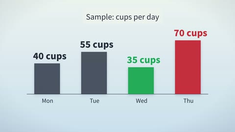
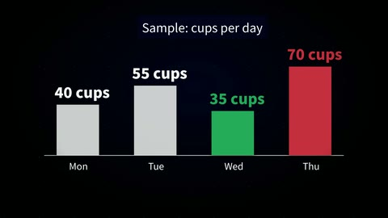
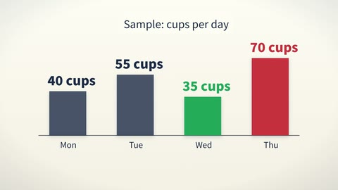
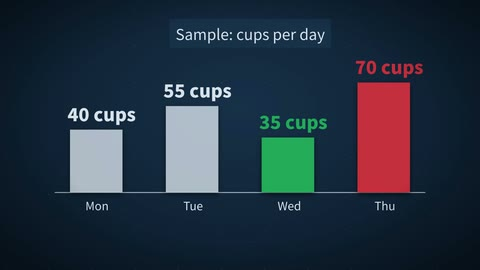
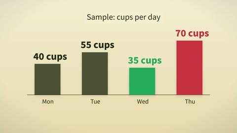
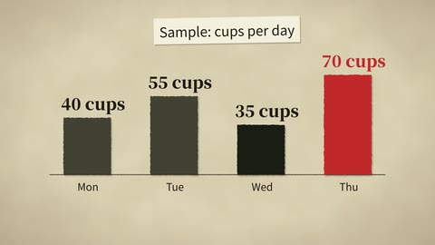
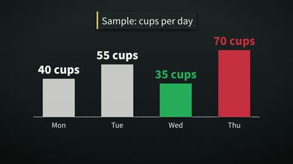
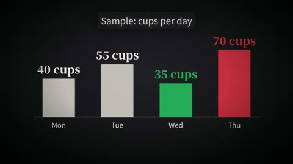

Palettes
One chart, 15 palettes
The palette is one field in the script ("theme"). Change the name and rerun: background, type and accent colors change across the whole film, and the timeline stays the same. The last five also change the shape of the cards and the texture of the ground.

lecture-lightLight
lecture-darkDark
lecture-storyStory
lecture-financeFinance
lecture-foodFood
lecture-techTech
lecture-historyHistory
lecture-faithFaith
collagePaper collage
liveLive footage
dark-goldDark gold
newsroomNewsroom
vintage-posterVintage poster
editorial-serifEditorial serif
cinematic-darkCinematic dark